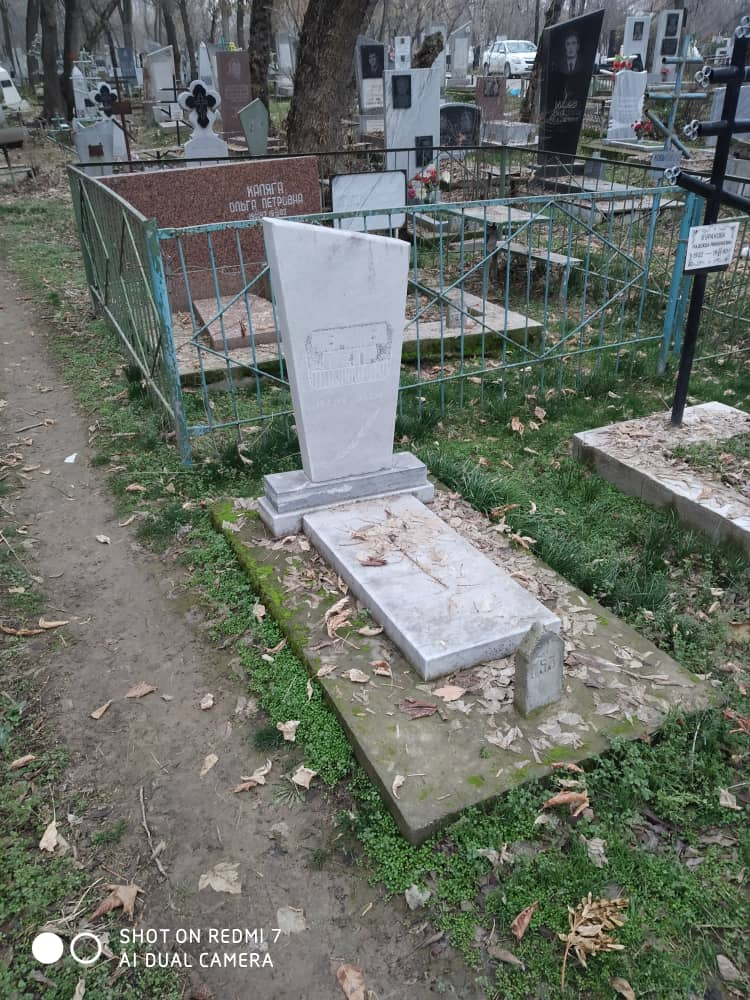

Памятник на могиле Черняева Петра Никитовича. Находится в г. Ташкенте на Домбрабатском кладбище, карта №151. Фото от 22 января 2022 г.

План Домбрабатского кладбища города Ташкент. Карта №151 выделена красным.
НАЗАД